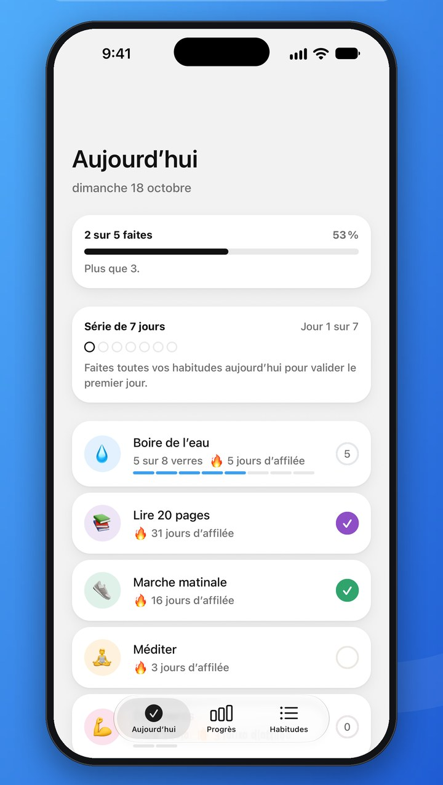
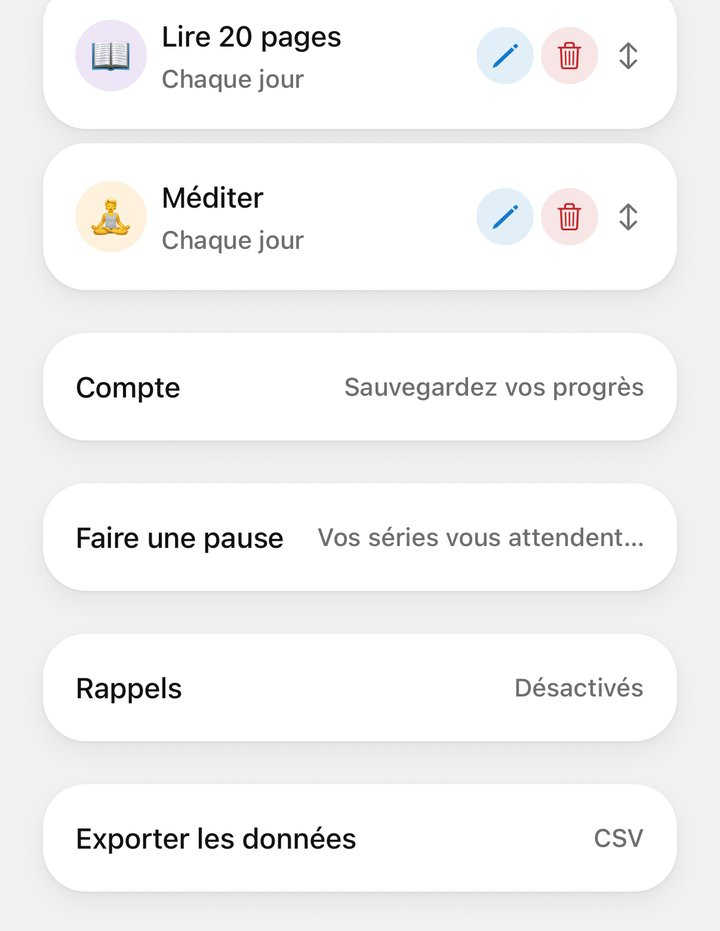
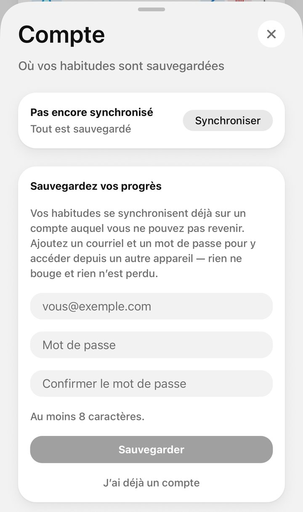
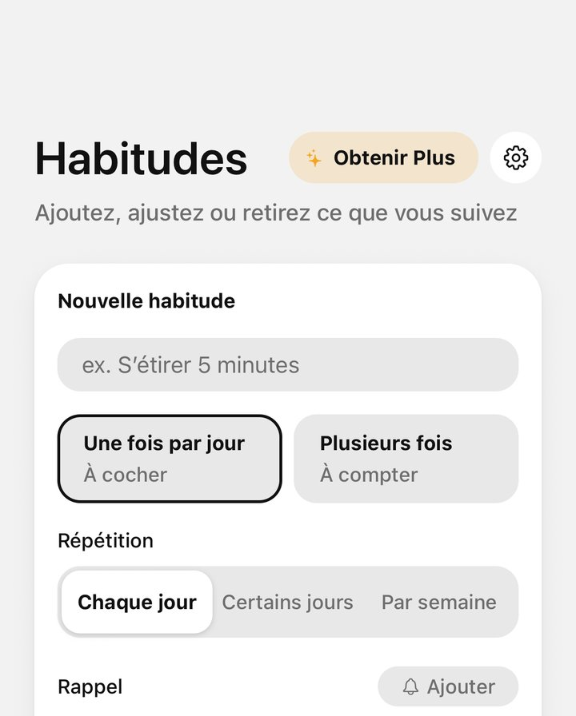
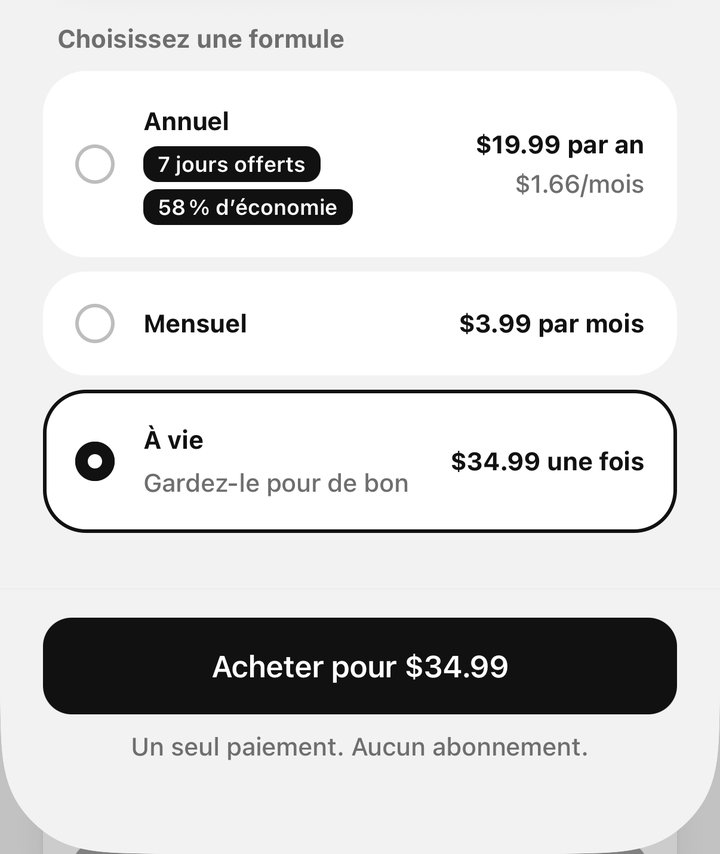

Tester Daily Ring avec TestFlight
Merci de tester. Vous êtes déjà sur la liste : il ne reste que cinq étapes sur votre iPhone. Comptez environ cinq minutes.
- Environ 5 minutesDe l’invitation à votre première habitude cochée
- Votre iPhone ou iPadEt l’adresse courriel que vous nous avez donnée
- GratuitTestFlight, la bêta et les achats de test ne coûtent rien
-
Installez TestFlight
TestFlight est l’app gratuite d’Apple pour essayer des apps avant leur arrivée sur l’App Store. Ouvrez l’App Store sur votre iPhone, cherchez TestFlight et touchez Obtenir.
Elle est publiée par Apple. Il suffit de l’installer une fois, et elle fonctionne aussi sur iPad.
Cherchez dans l’App Store, puis touchez Obtenir -
Ouvrez l’invitation sur votre iPhone
Vous recevrez un courriel de TestFlight vous invitant à tester Daily Ring, à l’adresse que vous nous avez donnée. Ouvrez-le sur votre iPhone et touchez Afficher dans TestFlight.
Vous l’avez ouvert sur un ordinateur ? Le courriel contient aussi un code. Ouvrez TestFlight sur votre iPhone, touchez Utiliser en haut et saisissez le code.
Un dessin simplifié du courriel -
Acceptez, puis installez
TestFlight s’ouvre sur Daily Ring. Touchez Accepter, puis Installer. Une fois l’installation terminée, le bouton indique Ouvrir, et Daily Ring est sur votre écran d’accueil avec un petit point orange à côté de son nom, qui signale une bêta.
Les notes À tester sur le même écran disent ce qui a changé dans cette version.
Accepter, puis Installer -
Ouvrez Daily Ring et cochez une habitude
Aucune inscription. Daily Ring s’ouvre avec trois habitudes d’exemple que vous pouvez renommer, modifier ou supprimer. Touchez un anneau pour cocher une habitude aujourd’hui, et continuez jusqu’à ce que tout soit fait.
Ensuite : sauvegardez vos progrès, puis obtenez Plus à vie gratuitement.

L’onglet Aujourd’hui -
Activez les mises à jour automatiques
Dans TestFlight, touchez Daily Ring et activez Mises à jour automatiques. Les nouvelles versions s’installent alors toutes seules, et vous testez toujours la dernière.
Chaque version cesse de s’ouvrir 90 jours après sa mise en ligne. Avec les mises à jour automatiques, cela n’arrive presque jamais.
Sur la page de Daily Ring dans TestFlight
Sauvegardez vos progrès, puis obtenez Plus gratuitement
1Sauvegardez vos progrès → 2Plus à vie, gratuit
1Sauvegardez vos progrès

Habitudes → Compte 
Courriel, mot de passe ×2 → Sauvegarder Touchez Confirmer le courriel Sauvegardé
2Plus à vie, gratuit

Obtenir Plus 
À vie → Acheter Confirmez · rien n’est facturé À vie · à vous pour de bon
Les prix affichés sont ceux de la boutique. En tant que testeur, vous ne payez rien.
Pendant vos tests
Envoyez vos commentaires avec une capture
Faites une capture d’écran, touchez sa vignette, puis OK et Partager un commentaire bêta. Ajoutez une note et envoyez : la capture et la note nous arrivent directement.
Ou ouvrez TestFlight, touchez Daily Ring, puis Envoyer un commentaire bêta.
Plus est gratuit pour les testeurs
Les achats dans TestFlight sont des achats de test, jamais facturés. Les abonnements de test se renouvellent en accéléré et prennent fin d’eux-mêmes : choisissez À vie.
L’app Apple Watch
Elle est fournie avec la bêta. Si elle n’apparaît pas sur votre montre, ouvrez l’app Watch sur votre iPhone, faites défiler jusqu’à Daily Ring et touchez Installer. L’app pour montre fait partie de Plus.
Vos données sont conservées
La bêta est la vraie app. Quand Daily Ring arrivera sur l’App Store, l’installer depuis l’App Store remplacera la bêta en gardant vos habitudes et votre historique.
En cas de problème
Je ne trouve pas le courriel d’invitation
Cherchez « TestFlight » dans vos courriels et vérifiez le dossier des indésirables. Il est envoyé à l’adresse que vous nous avez donnée. Toujours rien après une journée ? Écrivez-nous par le formulaire de contact et nous le renverrons.
« Afficher dans TestFlight » ouvre une page web
TestFlight n’est pas encore installée, ou le courriel a été ouvert sur un ordinateur. Installez TestFlight (étape 1), puis touchez de nouveau le bouton sur votre iPhone, ou saisissez le code avec le bouton Utiliser de TestFlight.
L’invitation a été envoyée à une adresse qui n’est pas mon compte Apple
Aucun problème. L’invitation fonctionne avec le compte Apple connecté sur votre iPhone, quel qu’il soit ; il n’a pas besoin de correspondre à l’adresse du courriel.
TestFlight dit que la bêta est complète ou n’est plus disponible
La version à laquelle vous avez été invité a expiré ou a été remplacée. Rouvrez TestFlight dans quelques minutes ; si le message reste, dites-le-nous par le formulaire de contact.
Comment quitter la bêta ?
Dans TestFlight, touchez Daily Ring, puis Arrêter le test. Vous pouvez ensuite supprimer l’app comme d’habitude. Si vous avez ajouté un courriel, supprimez d’abord le compte dans Habitudes → Compte → Supprimer le compte pour effacer ses données ; voici comment.
Quelque chose d’étrange, ou une idée ? Dites-le-nous. Chaque message est lu, et la bêta sert justement à cela.
Signaler un problème